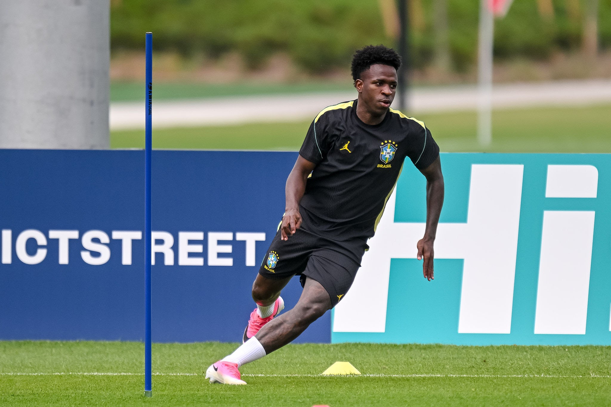

Vinicius Junior was born in São Gonçalo, a very densely populated city on the outskirts of Rio de Janeiro, Brazil’s capital. Despite being one of Brazil’s largest cities, São Gonçalo was riddled with poverty, gang violence, and limited infrastructure. Unlike Rio de Janeiro, it was not glamorous as shown in tourist campaigns, and for many families, football was the only realistic opportunity to change a child’s life.
His parents worked tirelessly to support the family. Although they were not wealthy, they worked hard to support Vinicius’ dreams of pursuing football. They invested everything they had for Vinicius to pursue his dreams.
When Vinicius was still very young, his family made enormous sacrifices to allow him to train at the Flamengo academy, nearly two hours away from his home. This meant long hours of work followed by two-hour commutes several times a week. Because his talent was undeniable, relatives living closer to the academy took him in so he could continue training without spending so much time commuting.
Vinicius joined Flamengo’s youth academy as a child and quickly distinguished himself as a quick and fearless winger. Coaches consistently remarked that he was never afraid to take a defender on and had a hunger like no other. Rather than playing cautiously, he welcomed the challenge and constantly put himself in situations that many young players would have avoided. By 16 years old, Flamengo believed they possessed one of Brazil’s greatest young talents in decades.
Before most teenagers had finished high school, Vinicius was now one of Brazil’s most important football assets, and in 2017, Real Madrid would agree to sign him. This transfer immediately changed expectations, and Vinicius began seeing very shocking expectations placed on him. Each match he played, each touch he made, and each mistake was scrutinized and amplified beyond measure. This mental strain was further exacerbated by moving to a new country, Spain, to play for Real Madrid. This meant a new language, teammates, different tactics, and pressure to justify his transfer fee. His first seasons were inconsistent, and many critics wondered if he really would live up to the price tag placed on him. Vinicius Junior’s main supporter, who would lead him to grow into one of the best footballers in the world, would be Carlo Ancelotti. He encouraged Vinicius to take on defenders even when he lost the ball and to believe that the goals would follow later on. By 2022, Ancelotti’s words helped boost Vinicius to become one of the most promising wingers in the world.
Around 2021, however, racist incidents started to be directed toward Vinicius. They transformed from isolated incidents into stadiums chanting racial slurs at him. By 2026, it was reported that 20 separate alleged racist incidents involved Vinicius’ time at Real Madrid.
His facial features, the color of his skin, and his identity were criticized and abused, turning into dehumanizing incidents. The most disturbing incident would occur in 2023, when an effigy that resembled Vinicius was hung from a bridge near the team’s training complex with a banner accompanying it.
Years later, members of the Atlético supporters’ group would receive criminal convictions and restraining orders for their behavior. A turning point was in 2023, when three supporters in the stadiums were banned and imprisoned for their racial abuse. In 2024, Vinicius broke down in tears, admitting that the racist abuse had begun to drain his desire to continue playing football. It became one of the most heartbreaking moments in Vinicius’ career and exemplified the mental strain that racist remarks had when left unaddressed. Many athletes chose to stay silent; however, Vinicius chose to challenge the clubs, officials, and football federation, insisting that change needed to occur.
"The strongest thing Vinícius Jr. ever changed wasn't his face—it was forcing the football world to finally confront racism."
Following the Valencia convictions, he wrote that “I’m not a victim of racism. I am an executioner of racists,” cementing himself as one who directly challenged this behavior and not a victim who allowed himself to be continuously berated.
As these incidents continued, football responses gradually evolved, and more rules and regulations were put into place to ensure that racism did not occur. Vinicius Junior’s greatest contributions might extend further than just his football skills. Although he won championships and became one of the best wingers in the world, his courage highlighted that racism cannot be tolerated and needs to be addressed.
He made sure that racist remarks would not go unaddressed, protecting the next generation of football stars and ensuring that football remained an equal and united game where all that mattered was the beautiful game.
References
Sources
- BBC Sport — Vinícius Jr. says racism is making him lose desire to play football (external link)
- BBC Sport — Racist abuse convictions involving Vinícius Jr. (external link)
- Reuters — Real Madrid game at Benfica suspended after Vinícius alleges racist slur (external link)
- Reuters — Vinícius earns Real Madrid win in match marred by racism row (external link)
- BBC Sport — Vinícius Jr. racism case and football’s response (external link)
- FIFA — No Discrimination campaign and official anti-racism resources (external link)
- Real Madrid — Official Vini Jr. player profile (external link)
- CBF — Official statement seeking action over racism against Vini Jr. (external link)
- UEFA — Three-step procedure for racist incidents (external link)